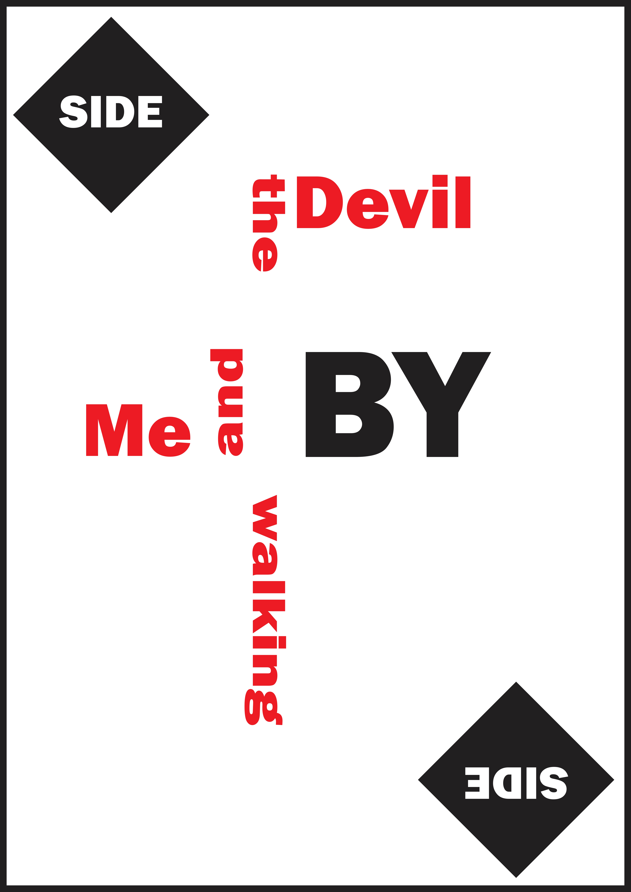
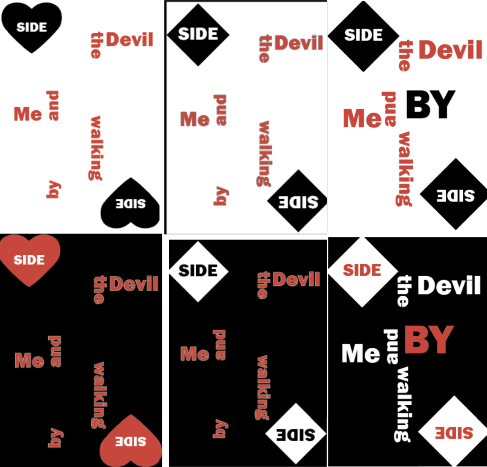

Opdracht
Voor het vak Design 1 aan MCT bij Erasmushogeschool Brussel kregen we als taak om een lyrische poster te maken. Hierbij mochten we één zin van een liedje nemen en daarvan een poster maken.
Ik heb de zin “Me and the devil walking side by side” gekozen van het liedje Me and the Devil van de artiest Soap&Skin.

Onderzoek
Ik ben eerst begonnen met een brainstorm om zo een beter idee te vormen van wat ik in mijn poster wilde. Daarna ben ik begonnen met een paar schetsen en deze schetsen in Adobe Illustrator uit te voeren.

Proces
Op basis van feedback van mijn docenten koos ik voor een lyrische poster met een kaartelement. Eerst wilde ik tarotkaarten gebruiken, maar dit bleek te veel te zijn. Daarom stapte ik over naar een gewoon kaartspel.
Vervolgens maakte ik verschillende versies, waarbij ik steeds dichter bij het uiteindelijke ontwerp kwam.


Eindresultaat
Mijn eindresultaat was een lyrische poster met kaartelementen en een chaotische compositie, waarmee ik de duivel wilde representeren.